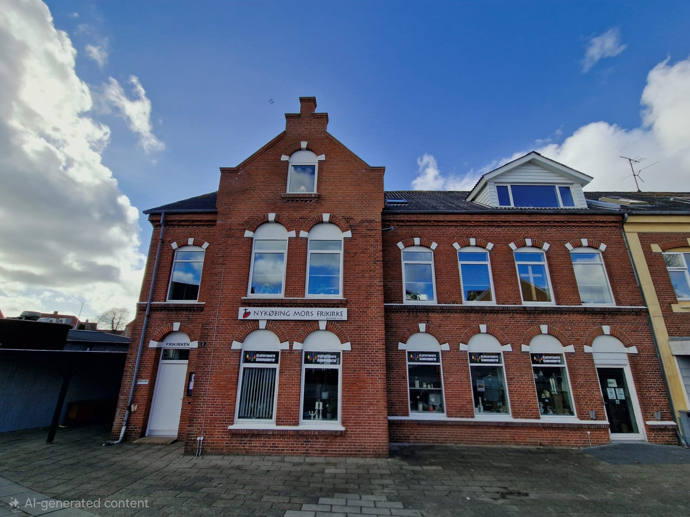
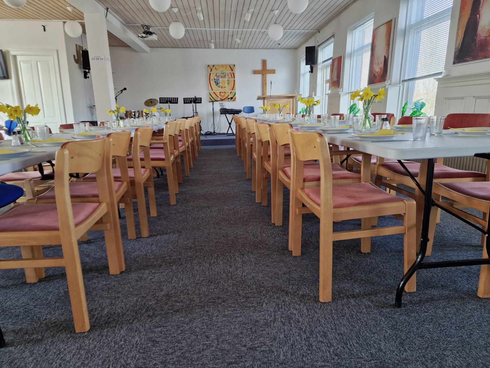
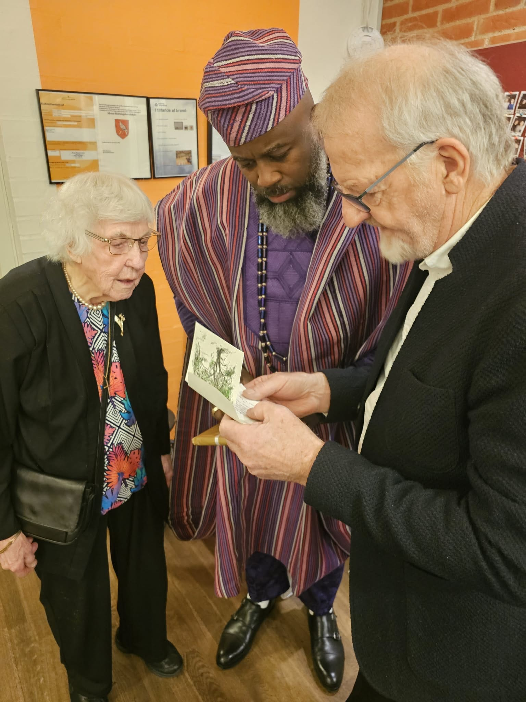
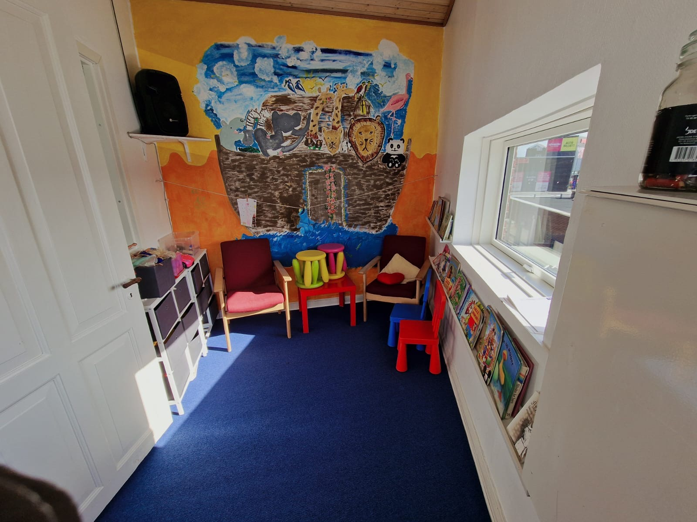

Nykøbing Mors Frikirke er et åbent og varmt kristent fællesskab midt i hjertet af Nykøbing Mors. Vi tror på, at kirken er et sted, hvor alle er velkomne — uanset baggrund, alder eller livssituation. Hos os finder du fællesskab, tro og nærvær i en atmosfære præget af kærlighed og respekt.



Gaver til kirkens arbejde kan indbetales på:
MobilePay: 49 99 54
Bankkonto: 9100-1025 888 371